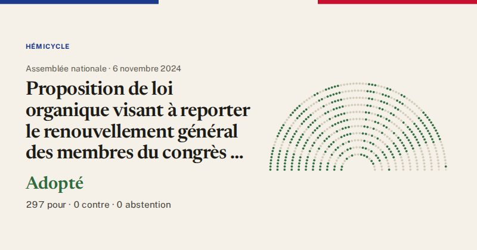

Assemblée nationale · scrutin n°266 · 6 novembre 2024
Proposition de loi organique visant à reporter le renouvellement général des membres du congrès et des assemblées de province de la Nouvelle-Calédonie (vote final, première lecture)
Adopté
297pour
0contre
0abstention

Le vote de chaque groupe
| Groupe | Pour | Contre | Abst. | Membres |
|---|---|---|---|---|
| La France insoumise (LFI-NFP) | 52 | 0 | 0 | 71 |
| GDR (communistes) | 11 | 0 | 0 | 17 |
| Écologiste et Social | 19 | 0 | 0 | 38 |
| Socialistes et apparentés | 37 | 0 | 0 | 66 |
| LIOT | 14 | 0 | 0 | 23 |
| Ensemble pour la République | 35 | 0 | 0 | 94 |
| Les Démocrates (MoDem) | 20 | 0 | 0 | 36 |
| Horizons & Indépendants | 19 | 0 | 0 | 34 |
| Droite Républicaine | 18 | 0 | 0 | 47 |
| UDR (Union des droites) | 2 | 0 | 0 | 16 |
| Rassemblement National | 68 | 0 | 0 | 125 |
| Non-inscrits | 2 | 0 | 0 | 8 |